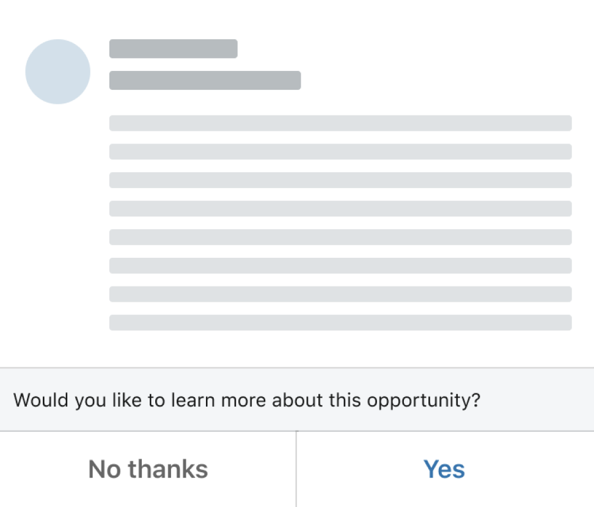
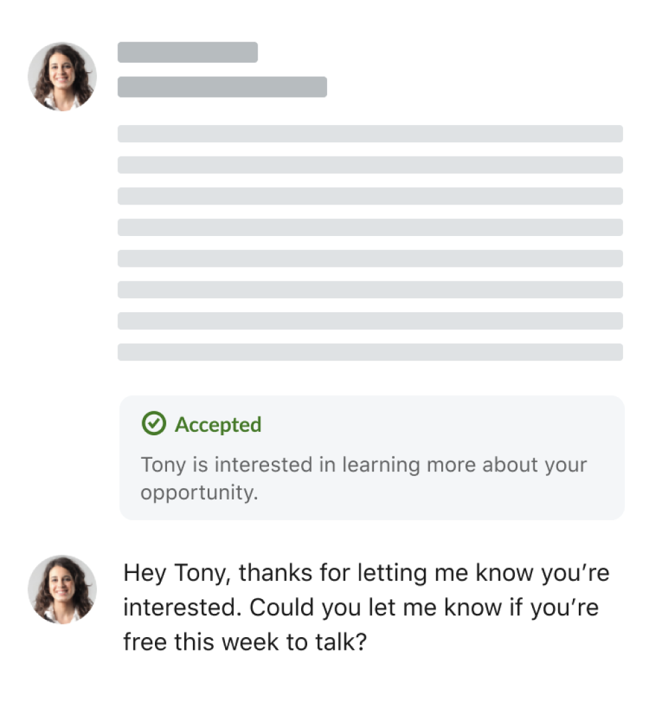
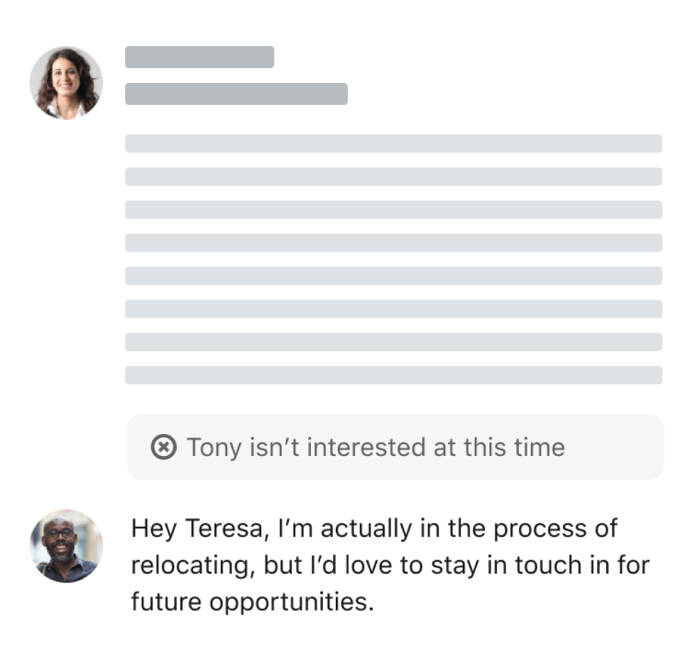

For in-demand candidates, replying to recruiter outreach on LinkedIn takes time, and a lot of inquiries don't feel relevant. For recruiters, sending that outreach costs time and money, and many candidates never reply at all. Underneath both problems, LinkedIn's own systems couldn't reliably classify these messaging interactions, which limited how well search and matching could work in the first place. I designed an updated quick-reply feature that enables candidates to send quick, templated replies while also more accurately inferring their interest in these opportunities for recruiters and LinkedIn's algorithms.
Quick replies started with a narrower goal than what we eventually shipped: help in-demand candidates reply faster, while improving LinkedIn's own search and recommendation models along the way. The original idea asked a candidate to explicitly signal their interest before continuing a conversation, so every message carried a clean label we could feed back into the system.
That worked, in a sense. Candidates were declining messages far more often than before, which was actually a good signal from an AI relevance perspective, feeding back into our search and recommendation algorithms. But it also created confusion for candidates and awkward conversational turn-taking for recruiters, and when someone tapped "No thanks," it still wasn't clear why.

Some candidates thought tapping "Yes" sent an actual reply on its own, and didn't realize they could still write in after choosing an option.

Candidates could signal interest without writing anything, which read to recruiters like a silent nod, or worse, a bug.

A binary yes or no was an awkward fit for a candidate who was interested in the company, but not that specific role.
I worked with a designer on our consumer messaging team to explore a wide range of concepts, reviewing them internally with design and product leadership. They mostly settled into two directions.
These concepts centered on explaining or clarifying the interaction, but otherwise fundamentally preserving the idea that a user would explicitly select an option before being able to reply.
Maybe we should just explain things better because that always works, right?
But seriously, much of the negative feedback came from existing users who suddenly experienced a change without an explanation, so this wasn't an unreasonable idea.
Users would still be required to quickly select "yes" or "no," but an optional response CTA helps clarify that it's still possible to write a reply.
We also explored a middle CTA which could better support users who were on the fence about an opportunity, although it also complicated the interaction.
Am I accepting or declining an invite, or am I rating an opportunity?
This direction let a candidate just reply, using natural language processing to infer their interest from what they actually wrote, the same approach behind our suggested-reply feature. It also meant revisiting the original templated-reply idea, now with more confidence in the underlying model than we'd had the first time around.
This was a re-styled version of the flow that existed before we introduced the "yes / no" button treatment. The consumer team had originally pushed for this, but it had been overruled because, at the time, we didn't have high confidence that the inference would be accurate.
The idea was revived because our inference models had grown more accurate since then, and the assumption that had ruled it out no longer held.
In addition to each direction, we also explored how we could better explicitly understand why a role wasn't a fit. The challenge here was balancing simplicity vs. comprehensiveness and offering clarity and control over what was actually shared back to a recruiter.
We took the template plus inference idea and A/B tested it against the current experience. When we ramped the experimental variant, we saw a lift in accept rates and more recruiters replying, since we'd solved the problem of "why are these message accepts blank?"
The experimental variant won out, making us realize that we no longer needed the current "yes vs. no thanks" UI after all.
We'd originally introduced those buttons because, despite the confusion they caused, they provided the clearest signal of job interest, which improved hiring efficiency overall. This experiment proved we could get that same signal with the previous UI because our inference models had become more accurate.
What ultimately shipped was a slightly improved version of the flow we'd originally had a year ago, before I joined the project. Candidates could reply naturally via text or use the templates, and the system would infer their interest from what they wrote.
For all the designers in the room, this was a relief, since we'd been looking for a way to just let people talk from the start. Now we had rigorous data to back the case that doing so would also improve recommendation quality and hiring efficiency.
There's often a trade-off in consumer products between what users want and what companies need to power their AI systems with data. In this case, we managed to get the best of both by rolling back a confusing UI decision that had over-prioritized the latter.
+5%
lift in message accept rate
We saw a lift in message accept rates and, importantly, the complete disappearance of confused user feedback about the "yes / no" buttons that had appeared in their message threads.
The hardest part of this project wasn't the interaction design, it was getting the organization to reconsider a decision it had already made. The root of the conflict was that the consumer team optimized for a clear user experience, while the talent solutions team had pushed for something that improved hiring efficiency, but at the expense of clarity for everyday candidates.
Getting the balance right was hard, especially in high-stakes meetings with product and design leaders. Personally, I wanted a solution that felt clearer than the yes/no buttons, and so did every other designer in the room, but we were butting heads against product and data science on the talent solutions side. It became a juggling act: balancing competing interests, quiet lobbying outside of meetings, and a series of qualitative and A/B tests to make the case.
We landed in a good spot that I'm happy with, one that respected both what candidates needed and what the business needed, but only because we were willing to keep pushing on a decision everyone else considered settled.
My big lesson was not taking past decisions at face value, and explicitly calling out the assumptions we'd made and asking whether they were still true. We hadn't revisited the natural-language option because we'd assumed our models weren't accurate enough, something we could have actively tracked and worked on instead of discovering several rounds into the conversation. Surfacing that context earlier would have prevented a ton of tense meetings and, more importantly, gotten a better experience to candidates sooner.